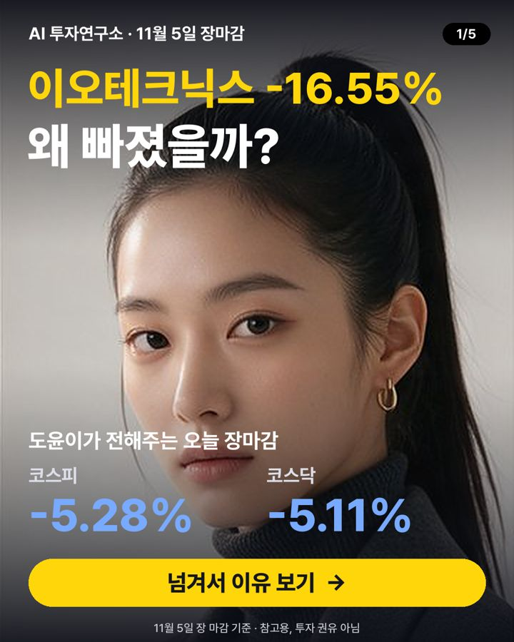

11월 5일 장마감 요약 — 코스피 -5.28%, 코스닥 -5.11%
2026-11-05 장 마감 기준 · 진행 강도윤 (리스크 점검)

오늘 코스피는 5,383.80로 -5.28%, 코스닥은 678.41로 -5.11% 마감했어요. 대형주 78종목 중 33개가 오르고 44개가 내렸어요. 원/달러 환율은 1,341원이에요.
지수 흐름
| 종가 | 하루 | 1주 | 1달 | |
|---|---|---|---|---|
| 코스피 | 5,383.80 | -5.28% | -9.33% | -20.87% |
| 코스닥 | 678.41 | -5.11% | -9.93% | -24.49% |
많이 오른 종목
- 에스케이바이오팜 +10.80% · 90,300원
뉴스관련 기사: [콘퍼런스콜 리뷰] SK바이오팜, 최대 이익 뒤 고민…오파칼림 비용 (블로터) - 카카오 +8.66% · 32,000원
호재3분기 실적과 1,500억 원 규모 자사주 매입 발표로 주가가 급등했어요 - 에스엠 +8.59% · 78,400원
뉴스관련 기사: 메리츠證 “에스엠, 3분기 실적 컨센서스 하회…목표가 11만원으로 하... (조선비즈) - 한미약품 +8.44% · 462,500원
호재한미약품이 비만신약 '에페' 임상시험에 GCCL 지원 받아 긍정적 기대감이 커졌어요 - 고려아연 +7.05% · 972,000원
호재액면분할과 자사주 소각·배당 발표로 투자자 기대가 상승했어요
많이 내린 종목
- 이오테크닉스 -16.55% · 310,000원
악재미래에셋이 이오테크닉스 지분을 감소시켜 매도 압력이 커졌어요 - 원익IPS -15.70% · 74,100원
뉴스관련 기사: 블루웨이브 쇼크 '검은 목요일'…데이터센터 규제 우려에 증시 급락(... (연합뉴스) - LIG디펜스앤에어로스페이스 -15.21% · 359,500원
악재입찰제한과 제재로 유상증자 연기·대드론 생산 우려가 커졌어요 - 삼성전기 -14.30% · 959,000원
악재코스피·코스닥 동반 '매도 사이드카'하이닉스 9%·삼성전자 7% 곤두박질 '블루쓰나미'에 반도체 투톱 급락 외국인 3.8조 순… - 솔브레인 -10.47% · 265,000원
중립솔브레인·코스메카코리아·에치에프알 등 코스닥 3사 협력 창업기업 21곳에 21억원 투자…13곳 팁스 선정·65억원 확보
누가 사고 팔았나 (순매수)
| 외국인 | 기관 | 개인 | |
|---|---|---|---|
| 코스피 | -34,035억 원 | +8,475억 원 | +22,803억 원 |
| 코스닥 | -733억 원 | -1,032억 원 | +1,726억 원 |
내일 체크 포인트
- 외국인 흐름 — 오늘 코스피에서 -34,035억 원 순매도
- 국제유가 — 최근 한 달 -4.85%
- 미국 10년 금리 4.89% · 공포지수 VIX 16.6
- 20일 이동평균선 위에 있는 대형주 27/78종목
이 글은 공개된 시세·수급 데이터와 그날 뉴스 제목을 정리한 참고 자료이며 투자 권유가 아닙니다. 시세는 거래소 종가 기준이고, 투자 판단과 결과의 책임은 본인에게 있습니다.